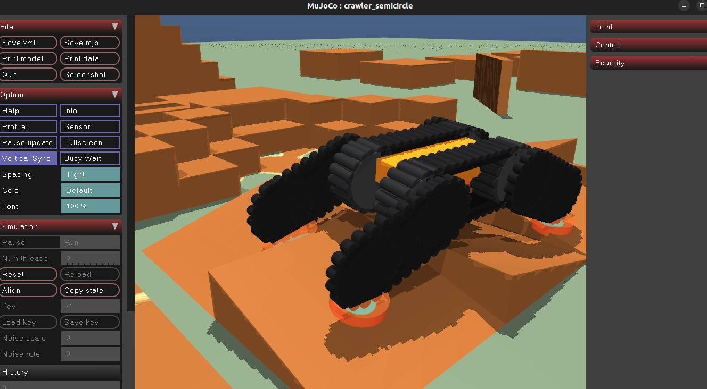

crawler_mujoco
A standalone MuJoCo simulator for a tracked crawler robot with flippers. It supports ROS 2 integration, RGB-D cameras, terrain point clouds, and structured run data.

Features
- Four grouser profiles: none, rectangle, semicircle, and spike
- Contact point and contact force visualization
- Bundled arena YAML and terrain models
- CSV output for pose, contacts, forces, and traversal time
- ROS 2 velocity and flipper commands, odometry, IMU, TF, and joint state
- Front and rear RGB-D cameras and terrain point clouds
Quick start
./setup.sh
./.venv/bin/python scripts/crawler_mujoco --shape rectangle --guiROS 2
source /opt/ros/humble/setup.bash
colcon build --symlink-install --packages-select crawler_mujoco
source install/setup.bash
ros2 launch crawler_mujoco crawler_mujoco.launch.py shape:=semicircle